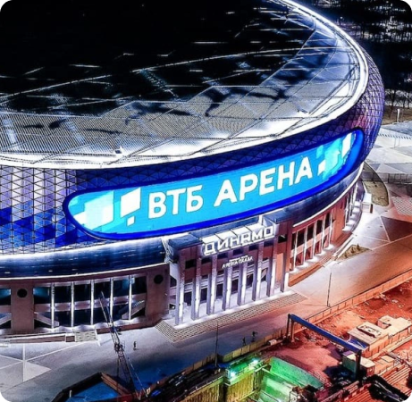

<!DOCTYPE html>
<html>
<head>
	<meta charset="UTF-8">
	<title>Артефакт - клуб настольных игр</title>
	<link  href="style.css" rel="stylesheet" type="text/css">
	<link href="https://cdn.jsdelivr.net/npm/bootstrap@5.0.1/dist/css/bootstrap.min.css" rel="stylesheet" integrity="sha384-+0n0xVW2eSR5OomGNYDnhzAbDsOXxcvSN1TPprVMTNDbiYZCxYbOOl7+AMvyTG2x" crossorigin="anonymous">
	<link rel="shortcut icon" href="http://afclub.ru/wp-content/uploads/2019/05/Артефакт-лого-символ-1.png" type="image/png">
	<script src="script.js"></script>
</head>
</html> 
<body>
    <div class="container">
        <a style="font-size: 40px; color:#0A2D61;">Стадион</a>
        <nav aria-label="breadcrumb" style="margin-top: 30px;">
            <ol class="breadcrumb" >
              <li class="breadcrumb-item"><a href="#" style="color: #0A2D61; font-size: 18px;">Главная</a></li>
              <li class="breadcrumb-item active" aria-current="page" style="color: #0A2D61; font-size: 18px;">Стадион</li>
            </ol>
          </nav>
    </div>
    <div class="container" >
        <div class="row d-flex h-auto fontSize-18">
            <div class="col-md-12 col-lg-6">
                
            </div>
            <div class="col-md-12 col-lg-6 h-auto" style="color: #233550;">
                <p>Многофункциональный спортивный комплекс «ВТБ Арена» объединяет под одной крышей универсальную «ВТБ Арену», Центральный стадион «Динамо» имени Льва Яшина и торговый центр «Арена Плаза». Центральный стадион стал домашней площадкой для футбольного клуба «Динамо», на малой арене проходят концертные шоу, спортивные турниры, а также тренировки и матчи хоккейного клуба «Динамо».
                    <br><br>
                    
                    Кроме того, большие экраны за сценой предоставят возможность рассмотреть происходящее действо в мельчайших подробностях.
                    <br><br>
                    При проведении футбольных матчей вместимость арены составляет 25 716 зрителей: места расположены на трех ярусах трибун и этаже VIP-лож. Удобная планировка, отдельная фан-зона, сиденья с подогревом, современные мультимедийные системы позволяют в полной мере наслаждаться игрой. Общая вместимость спортивного комплекса около 47 тысяч человек.
                    <br><br>
                    Открытие футбольного стадиона состоялось 26 мая 2019 года проведением матча между «Динамо» и «Арсеналом» в рамках 30-го тура Российской Премьер-лиги. Сегодня купить билеты на матчи, проходящие на площадке «ВТБ Арены», не составляет никакого труда – нужно лишь несколько минут Вашего времени и доступ в интернет. В апреле и мае 2021 года «ВТБ Арена» принимает матчи Российской Премьер-лиги Тинькофф. В скором времени ФК «Динамо» предстоит сразиться с «Химками» и «ЦСКА». Билеты уже поступили в продажу! На все предстоящие матчи заказать билеты можно на нашем сайте в любое удобное время, оплатив их после подтверждения заказа.
                </p>

                <!-- <p>При проведении футбольных матчей вместимость арены составляет 25 716 зрителей: места расположены на трех ярусах трибун и этаже VIP-лож. Удобная планировка, отдельная фан-зона, сиденья с подогревом, современные мультимедийные системы позволяют в полной мере наслаждаться игрой. Общая вместимость спортивного комплекса около 47 тысяч человек.</p> -->
                
                <!-- <p>Открытие футбольного стадиона состоялось 26 мая 2019 года проведением матча между «Динамо» и «Арсеналом» в рамках 30-го тура Российской Премьер-лиги. Сегодня купить билеты на матчи, проходящие на площадке «ВТБ Арены», не составляет никакого труда – нужно лишь несколько минут Вашего времени и доступ в интернет. В апреле и мае 2021 года «ВТБ Арена» принимает матчи Российской Премьер-лиги Тинькофф. В скором времени ФК «Динамо» предстоит сразиться с «Химками» и «ЦСКА». Билеты уже поступили в продажу! На все предстоящие матчи заказать билеты можно на нашем сайте в любое удобное время, оплатив их после подтверждения заказа.</p> -->
            </div>
        </div>
        <div class="row" style="margin-top: 50px;">
            <div class="col"></div>
            <div class="col"></div>
            <button type="button" class=" btn btn-primary col-md-5 col-lg-2 fontSize-18"><a class="fontSize-18" style="color:white; text-decoration: none;">На Главную </a></button>
            <div class="col"></div>
            <div class="col"></div>
        </div>
    </div>
</body>